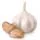

INGREDIENTES
 1 kg de patinho em cubos
1 kg de patinho em cubos 4 colheres de farinha de trigo
4 colheres de farinha de trigo 1 colher de óleo
1 colher de óleo Sal a gosto
Sal a gosto Pimenta-do-reino a gosto
Pimenta-do-reino a gosto 1 colher de manteiga
1 colher de manteiga 1/2 cebola ralada
1/2 cebola ralada- 1 dente de alho picado
 400 g de extrato de tomate
400 g de extrato de tomate 1 kg de batata amassada
1 kg de batata amassada- 1/2 xícara de manteiga
 1/2 xícara de leite
1/2 xícara de leite 200 g de queijo ralado
200 g de queijo ralado
Modo de preparo
Tempo: 50min
- Em um recipiente, misture a carne com a farinha de trigo.
- Em uma panela, aqueça o óleo, acrescente a carne, tempere com sal e pimenta-do-reino e deixe
dourar.Retire a carne da panela e reserve.
- Na mesma panela usada para dourar a carne, adicione a manteiga e refogue a cebola e o alho.
Volte acarne para a panela e misture bem.
- Adicione o extrato de tomate. Tempere com sal e pimenta-do-reino e deixe cozinhar. Reserve.
- Enquanto isso, prepare o purê, misturando o leite e a manteiga na batata.
- Em uma forma untada, coloque o purê no fundo, o queijo por cima e a carne por cima de tudo.
- Finalize com mais um pouco de queijo por cima de tudo e leve ao forno até gratinar.